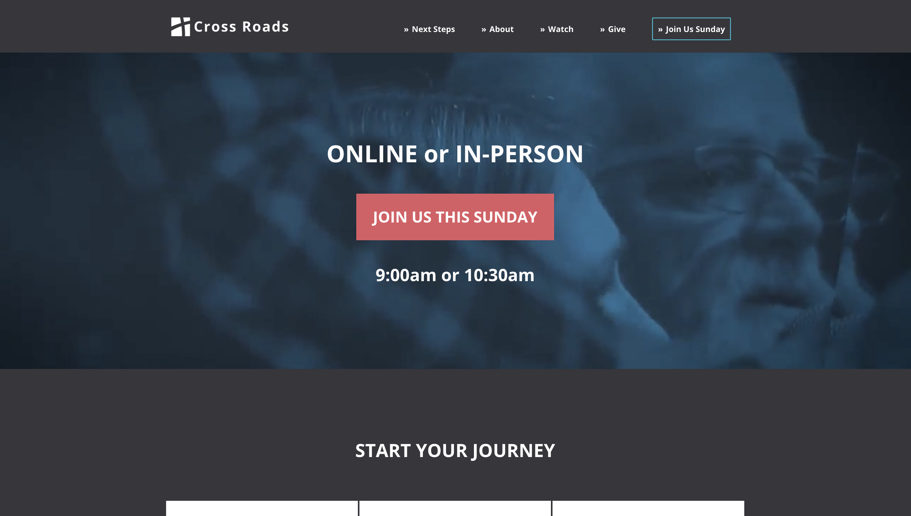

I launched a new website for Cross Roads Church, a church of 270+ members. The new website is organized more efficiently, is more usable, and far more functional compared to the church's former website. I led a study of the website with 24 participants using moderated testing in order to analyze the new website's performance and made design tweaks based on the results of the study.


I doubled the click-rate from 1.4% to 2.8% from the previous newsletter by re-designing Cross Roads Church's parent newsletter.

I led a study with 6 participants over the course of 3 days to analyze the performance of a real estate agent's new website. I co-led stakeholder interviews, requirements gathering, and designing of the agent's new website.

I gathered data through 4 interviews with college students to create an app that calms the user down during anxiety. I used affinity diagrams and hierarchal analysis to develop wireframes of a mobile application to help alleviate anxiety.

I led a study with 5 ESL students using contextual inquiries to gain insights on ESL students' processes when they use the internet to look up idioms. I produced a hi-difelity prototype after using hierarchal analysis and affinity diagrams to map out the user's journey.